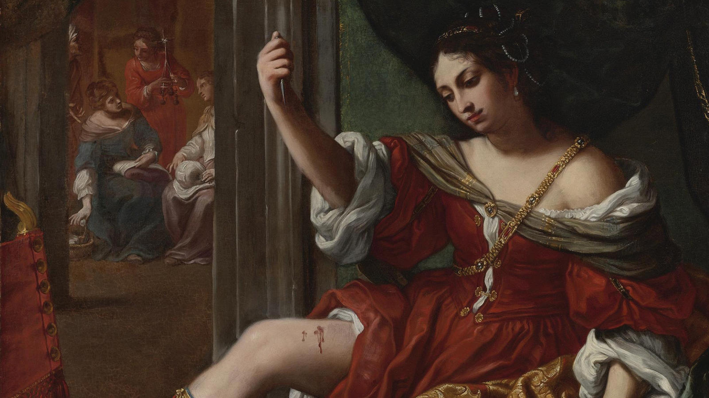

Elisabetta Sirani, Portia Wounding Her Thigh, 1664, Oil on Canvas, Private Collection. Image Courtesy of Kimball Art Museum
The Italian Renaissance is often considered a turning point in Western art. Paintings became more natural and enchanting, drawing the viewer into scenes and making them feel a part of the moment. When most people think of the Renaissance, names such as Leonardo da Vinci, Michelangelo Buonarroti, and Raphael da Urbino instantly come to mind. These artists are significant figures but they are not the only members or gender that participated in the Renaissance. This project seeks to collect information on women artists from the Renaissance and the slightly later Baroque period. Not only will this information be collected into one easily accessible format but statistical information on the subjects of these paintings will be provided. Women were great painters of the Italian Renaissance and Baroque but they also brought a unique view to historical biblical and mythological subjects. This project will help bring the women of this impressive period in western art history to a more notable place in society today.